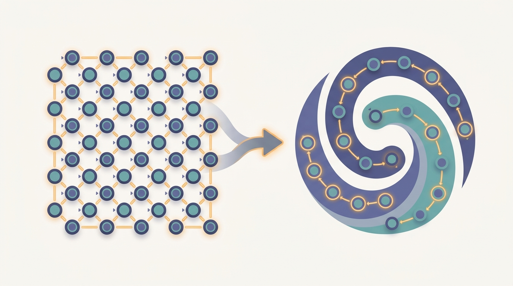

"I do not know where the colony is going. I know there is more pheromone to my left than to my right, and that is the entire contents of my professional opinion."
An Ant That Has Never Seen the Map

Swarm intelligence is the engineering discipline of getting a useful collective behavior out of many simple agents that follow local rules, sense only their neighborhood, hold no global picture, and answer to no central controller. The previous section argued that intelligence can be a property of a group rather than of any member. This section makes that idea operational. The defining move is to coordinate through the environment instead of through messages: an agent changes the world (drops a marker, shifts a value), and other agents react to the changed world later, somewhere else. That indirection, called stigmergy, decouples agents in time and space, which is exactly why a swarm scales to thousands of members on almost no communication budget. The price is that you give up guarantees and direct control; you design the local rules and the feedback loops, then let the answer emerge. Everything in the rest of this chapter, ant colony optimization and particle swarms included, is a concrete instance of the machinery introduced here.
A swarm is a deliberately impoverished kind of multi-agent system. In Chapter 29 the agents were capable: they modeled each other, negotiated, bid in auctions, and exchanged structured messages. A swarm strips almost all of that away. Its agents are simple, near-identical, and individually unremarkable; not one of them could solve the task alone, and none of them is trying to. The interesting behavior, finding the shortest route, covering an area, agreeing on a direction, is a property of the population and its interactions, not of any agent. The mental model above captures the whole move in one image: identical agents each apply the same local rule with their nearest neighbors, and a coherent global pattern that no agent designed or controls falls out of the interaction. The question this section answers is how that is even possible: how a crowd of agents with no leader and no shared map produces a coherent, adaptive global outcome, and why that arrangement turns out to be a remarkably good fit for AI that must run across many machines or many physical robots.
1. The Five Properties That Make a Swarm Beginner
Swarm intelligence is not a single algorithm; it is a design stance defined by a short list of constraints the agents must respect. Hold to all of them and you get the characteristic robustness and scalability; relax one and you have drifted into the richer, costlier multi-agent systems of the previous chapters. There are five.
Agents are simple and homogeneous. Each runs the same small rule set with the same parameters. There is no specialist coordinator, no agent that knows more than the rest. This is what lets a swarm be cheap to build and analyze: you reason about one agent and one interaction, then about the population.
Agents sense locally. An agent perceives only its immediate neighborhood, a few nearby agents or a small patch of the environment. It has no sensor that reads the whole system. Local sensing is what keeps the per-agent cost flat as the swarm grows.
Agents have no global knowledge and no central control. No agent holds a map of the whole problem, and no process tells the agents what to do. Authority is fully decentralized; the system is the agents and their surroundings, nothing more. This is the property that ties swarms directly to the thesis of this book: coordination without a coordinator.
Agents coordinate indirectly. They do not, in the pure case, send each other messages at all. They influence each other by changing a shared medium, the environment, and by reacting to changes others made. The next section is devoted to this mechanism because it is the load-bearing one.
It is tempting to read "simple, local, no global view, no controller" as a list of things a swarm lacks. Read it the other way. Because no agent is special, losing agents costs you almost nothing (robustness). Because every agent acts on local information, the rule an agent runs does not mention the swarm size, so the same rule works for ten agents or ten thousand (scalability). Because behavior is recomputed from the current environment every step rather than from a fixed plan, the swarm tracks a moving target for free (flexibility). The constraints are not the tax; they are what you are buying.
2. Stigmergy: Coordination Through the Environment Intermediate
The fifth property, indirect coordination, deserves its own name and its own section, because it is the mechanism that makes everything else affordable. The term is stigmergy, coined by the biologist Pierre-Paul Grasse to describe how termites build without a blueprint: an agent modifies the environment, and the modified environment stimulates the next action, by the same agent or by another, possibly much later. The canonical example is the ant pheromone trail. A foraging ant that finds food returns to the nest laying a chemical; other ants are biased toward higher pheromone concentrations and tend to follow the trail, reinforcing it as they go. No ant ever tells another ant anything. The message is the world.
What stigmergy buys is a profound decoupling. With direct messaging, the sender and receiver must overlap: the receiver must exist, be addressable, and be listening when the message is sent. Stigmergy removes all three requirements. The agent that deposits a marker need not know who will read it, whether that reader exists yet, or when the reading will happen. Coordination is decoupled in time (deposit now, read an hour later) and in space (deposit here, react over there as the signal diffuses). That decoupling is precisely why a stigmergic swarm needs almost no communication infrastructure and scales without a directory of who-talks-to-whom. Figure 31.2.1 lays out the loop.
Stigmergy is not new to this book; it is the swarm-scale return of a thread we have followed since Part VI opened. In Section 29.4 we drew the line between direct communication, where agents exchange addressed messages, and indirect communication, where they leave signs in a shared medium; stigmergy is indirect communication taken to its minimal, anonymous extreme. And the shared medium itself is the blackboard of Section 27.4, where independent knowledge sources coordinate by reading and writing a common data structure rather than calling each other. A pheromone field is a blackboard with a spatial layout and an evaporation policy. The thesis thread below names this continuity explicitly.
The book's recurring idea that coordination can live in shared state rather than in direct messages reaches its purest form here. The blackboard of Section 27.4 let a handful of expert modules cooperate through a common structure; the indirect-communication channel of Section 29.4 generalized that to anonymous agents. Swarm stigmergy pushes the same principle to thousands of agents and makes it the only coordination mechanism, with no messages at all. Watch for it to return one more time in Chapter 32, where LLM agents coordinate through a shared memory or scratchpad: the medium is text in a vector store rather than pheromone on a grid, but the pattern, write to the world and let others read it, is identical.
3. Self-Organization From Feedback and Noise Intermediate
A shared environment is the channel; self-organization is what flows through it. The term means that global structure (a sharp trail, a coherent flock direction, an even division of labor) arises from purely local interactions, with no template of the structure stored anywhere. The theory of biological self-organization, set out by Bonabeau, Dorigo, and Theraulaz, identifies four ingredients, and a swarm needs all four working together.
Positive feedback amplifies a good choice. An ant on a strong trail reinforces it, making it stronger, attracting more ants. This is the engine of structure: it turns a small initial difference into a decisive one, a process called autocatalysis. Left alone, positive feedback runs away; the swarm would lock onto the first route it found and never let go. So it must be balanced by its opposite.
Negative feedback dampens and stabilizes. Pheromone evaporates; food sources deplete; an agent that finds a crowd backs off. Evaporation is the clean example: it continuously erases markers, so a trail survives only if it is being actively reinforced. This lets the swarm forget stale information and abandon a route that has stopped paying off, which is the root of its flexibility.
Randomness provides the raw variation that positive feedback selects from. If every agent always took the current best option, the swarm could never discover a better one; exploration would die. A little noise in each agent's choice keeps some agents wandering off the trail, occasionally finding a shortcut that positive feedback then amplifies into the new consensus. Randomness is not a defect to be engineered out; it is the swarm's search operator.
Multiple interactions are the precondition. A single agent leaving a single mark organizes nothing; the structure appears only when many agents repeatedly write to and read from the shared medium, their effects compounding. Self-organization is a population phenomenon by construction.
We can write the loop compactly. Let $\tau_e(t)$ be the marker level on environment element $e$ (a grid cell, an edge) at step $t$. The two feedback channels combine into one update,
$$\tau_e(t+1) = \underbrace{(1-\rho)\,\tau_e(t)}_{\text{negative: evaporation}} + \underbrace{\sum_{k \in A_e(t)} \Delta_k}_{\text{positive: deposits}},$$where $\rho \in (0,1]$ is the evaporation rate and $A_e(t)$ is the set of agents that reinforced element $e$ this step, each contributing $\Delta_k$. An agent then chooses its next action by sampling from a distribution that favors high-$\tau$ neighbors, with enough randomness left in the sampling to keep exploring. That single equation, evaporate then deposit, then sample, is the beating heart of ant colony optimization in Section 31.3; here we watch it self-organize from scratch.
4. A Swarm Finds a Trail With No One in Charge Intermediate
The cleanest way to believe that local rules and a shared environment produce global order is to build the smallest system that shows it and watch the order appear. The simulation below puts sixty identical agents on a grid. Each agent knows only two things: whether it is currently carrying food, and the pheromone level in the eight cells around it. There is no map, no list of other agents, and no controller. Searching agents drift toward the food with heavy randomness; an agent that reaches the food picks it up and heads home, depositing pheromone as it walks. Every step, all pheromone evaporates a little. The update is exactly the evaporate-then-deposit rule of Section 3, applied per cell.
import numpy as np
rng = np.random.default_rng(7)
G = 40 # grid is G x G cells
STEPS = 600
N_AGENTS = 60
EVAP = 0.92 # negative feedback: pheromone decays each step
DEPOSIT = 5.0 # positive feedback: an agent on the trail reinforces it
FOOD = (32, 32) # a single resource location
NEST = (8, 8)
# The ENVIRONMENT: a shared scalar field. No agent stores it; it IS the channel.
pher = np.zeros((G, G))
# Agents: position and a one-bit internal state (carrying food or not).
pos = np.tile(np.array(NEST), (N_AGENTS, 1)).astype(float)
carrying = np.zeros(N_AGENTS, dtype=bool)
def clamp(p):
return np.clip(p, 0, G - 1)
def sense_gradient(p):
# Look at the 8 neighbours, pick the one with the most pheromone (local sensing).
x, y = int(p[0]), int(p[1])
best, bestv = None, -1.0
for dx in (-1, 0, 1):
for dy in (-1, 0, 1):
if dx == 0 and dy == 0:
continue
nx, ny = x + dx, y + dy
if 0 <= nx < G and 0 <= ny < G and pher[nx, ny] > bestv:
bestv, best = pher[nx, ny], (nx, ny)
return best, bestv
def step_toward(p, target, noise):
d = np.sign(np.array(target, float) - p)
# randomness / exploration: sometimes ignore the target and wander
if rng.random() < noise:
d = rng.integers(-1, 2, size=2)
return clamp(p + d)
deliveries = 0
trail_len_log = []
for t in range(STEPS):
pher *= EVAP # negative feedback (evaporation)
for i in range(N_AGENTS):
if not carrying[i]:
# search: follow pheromone toward food if any, else explore
cell, val = sense_gradient(pos[i])
if val > 0.05 and rng.random() < 0.8:
pos[i] = clamp(np.array(cell, float))
else:
pos[i] = step_toward(pos[i], FOOD, noise=0.6)
if np.array_equal(pos[i].astype(int), FOOD):
carrying[i] = True
else:
# return to nest, laying pheromone (stigmergic deposit) as it goes
x, y = int(pos[i][0]), int(pos[i][1])
pher[x, y] += DEPOSIT # positive feedback (reinforce trail)
pos[i] = step_toward(pos[i], NEST, noise=0.1)
if np.array_equal(pos[i].astype(int), NEST):
carrying[i] = False
deliveries += 1
if t in (50, 150, 300, 599):
trail_len_log.append((t, int((pher > 0.5).sum())))
print("grid :", f"{G}x{G}, agents={N_AGENTS}, steps={STEPS}")
print("central controller : none (each agent senses one cell, no global map)")
print("total deliveries :", deliveries)
print("trail cells over time:", trail_len_log)
# Concentration: fraction of pheromone within 2 cells of the straight nest->food line.
ii, jj = np.indices((G, G))
ax, ay = NEST; bx, by = FOOD
num = np.abs((by - ay) * ii - (bx - ax) * jj + bx * ay - by * ax)
den = np.hypot(by - ay, bx - ax)
near = (num / den) <= 2.0
corridor = pher[near].sum()
print("pheromone near trail :", f"{corridor / (pher.sum() + 1e-9):.0%} of total mass")
pher field; agents never reference each other, only the cells around them. Positive feedback (deposit) and negative feedback (evaporation) are the two marked lines, and the per-agent rule never mentions N_AGENTS, which is what makes it scale-invariant.grid : 40x40, agents=60, steps=600
central controller : none (each agent senses one cell, no global map)
total deliveries : 130
trail cells over time: [(50, 6), (150, 1), (300, 7), (599, 88)]
pheromone near trail : 87% of total massNothing in the code computes a path. The corridor in Output 31.2.1 is not stored anywhere; it exists only as a transient concentration in a field that is constantly decaying. Positive feedback (the deposits of returning agents) builds it up, negative feedback (evaporation) keeps it from spreading into noise, and the heavy search-phase randomness is what let the first few agents stumble onto the food at all. Kill half the agents mid-run and the trail thins but survives; move the food and the old corridor evaporates while a new one assembles. That is robustness and flexibility falling out of the rule, not added to it. The same mechanism, with edges of a graph standing in for grid cells, is ant colony optimization, which the next section makes precise.
Stigmergy has a famous failure mode. Army ants that are separated from a trail and lose all other cues will follow the strongest nearby pheromone, which is the trail they themselves are laying. The result is an ant mill: a spinning circle of ants, each dutifully following the ant in front, that can rotate until the whole group dies of exhaustion. Pure positive feedback with no external correction is a loop with no exit. It is a vivid reminder that a swarm's intelligence is only as good as the feedback structure you give it, a point Section 31.9 returns to under failure modes.
5. The Payoffs and the Price Intermediate
The reason swarm intelligence is an engineering subject and not just a biology lesson is that the five properties of Section 1 translate into three concrete system-level payoffs, each of which is a property distributed-systems engineers pay dearly for elsewhere in this book.
Robustness. Because agents are homogeneous and no one is in charge, the swarm has no single point of failure. Lose ten percent of the agents, or fifty percent, and the global behavior degrades gracefully rather than collapsing; the survivors run the identical rule and the structure re-forms. This is fault tolerance achieved by redundancy and statelessness rather than by checkpointing or consensus, the heavier machinery of Chapter 18.
Scalability. The rule each agent runs is written in terms of its local neighborhood and never mentions the population size. Adding agents adds proportional work and proportional environment, with no central bottleneck to widen, so the per-agent cost stays flat from ten agents to ten thousand. Contrast this with a coordinator-based design, where the coordinator's load grows with the swarm and eventually caps it.
Flexibility. Because the behavior is recomputed from the current environment every step rather than executed from a stored plan, the swarm adapts to change for free. A blocked path, a moved resource, a new obstacle: the markers re-equilibrate and the collective behavior follows, with no replanning step because there was never a plan.
The price of all three payoffs is paid in design and in guarantees. There is no theorem promising the swarm finds the optimum, or finds anything, by a deadline; emergence is a tendency, not a contract. Worse, the central engineering task is an inverse problem: you are handed a desired global behavior and must work backward to the local rules and feedback parameters that produce it, and that map from micro-rules to macro-behavior is nonlinear, often chaotic, and has no general solution method. Forward simulation is easy; design is hard. This is why so much swarm engineering is empirical tuning of evaporation rates and noise levels, and why formal guarantees, when you need them, push you back toward the coordinated methods of the earlier chapters.
Who: A robotics platform engineer at a fulfillment-center automation vendor.
Situation: Several hundred floor robots ferry shelves to picking stations across a single warehouse, and traffic patterns shift hour to hour as orders change.
Problem: A central path planner that recomputed optimal routes for every robot became the bottleneck: it could not replan fast enough as the fleet grew, and a planner outage stalled the whole floor.
Dilemma: Keep scaling the central planner with more compute and tighter consensus, fighting a growing single point of failure, or move to a decentralized scheme where each robot decides locally and gives up any global optimality guarantee.
Decision: They adopted a stigmergic congestion scheme: each robot writes a short-lived "I am here, recently" marker into a shared spatial grid (a digital pheromone), and every robot's local router is biased away from high-marker cells.
How: The marker grid lives in a fast shared key-value store with time-to-live expiry standing in for evaporation; robots read only the cells along their candidate next moves, exactly the local-sensing rule of Code 31.2.1.
Result: Congestion smoothed out without any robot holding a global traffic map, throughput rose as the fleet grew rather than plateauing, and a node failure now removes one robot's markers instead of halting the floor.
Lesson: When the binding constraint is a central coordinator that will not scale, trading guaranteed optimality for stigmergic, local decisions can buy back both scalability and robustness, the exact trade Section 5 frames.
6. Why Swarm Principles Fit Decentralized AI Advanced
The biological origins, ants foraging, bees choosing a nest site, termites building mounds, are charming, but the reason this chapter sits in a book on distributed AI is that the swarm constraints line up almost perfectly with the constraints of massively decentralized AI systems. A drone swarm cannot rely on a central controller, because the radio link to it is the first thing to fail and the latency to it kills tight-loop control; each drone must act on what it senses locally and on light signals from its neighbors, which is the swarm stance exactly. A wireless sensor network has thousands of cheap, failure-prone, battery-limited nodes that cannot afford global communication; aggregating a measurement by local gossip and stigmergic in-network marking is the only thing that scales. A collective of decentralized software agents, the kind Chapter 32 orchestrates, coordinating through a shared memory store rather than a central dispatcher, is running stigmergy with text for pheromone.
In each case the appeal is the same triad. These systems have no reliable center, so they need decentralized control. They have huge or fluctuating membership, so they need scale-invariant local rules. They operate in changing, partly broken conditions, so they need robustness and flexibility over guarantees. Swarm intelligence is the design pattern that delivers exactly those three, which is why its two flagship algorithm families have outlived their biological metaphors and become general-purpose tools: ant colony optimization (Section 31.3), derived from foraging and pheromone trails, attacks combinatorial routing and assignment problems on graphs; particle swarm optimization (Section 31.4), derived from flocking, attacks continuous numerical optimization. Both are just the feedback-and-environment machinery of this section, specialized to a problem shape.
The inverse problem of Section 5, designing local rules for a target global behavior, is precisely the kind of search that learning is good at, and the current frontier is to stop hand-coding swarm rules and learn them. Graph-neural-network controllers that share weights across all agents and pass messages only along a local communication graph have been trained for decentralized flocking, coverage, and formation control, with the trained policy provably transferring from small training swarms to much larger deployment swarms (the scalability property, now learned rather than assumed). In parallel, work on differentiable and neural stigmergy treats the shared environment field as a learnable medium, letting agents discover what to write and how to read it by gradient descent through a simulator, and 2024 to 2026 multi-agent reinforcement learning research increasingly frames emergent communication as agents learning a stigmergic channel rather than a message protocol. The training infrastructure for these decentralized policies is the actor-learner machinery of distributed RL (Chapter 30); the open problem is guaranteeing that a learned local rule still yields the desired global behavior, the inverse problem with a neural network in the loop.
Code 31.2.1 hand-rolled the agent loop, the environment grid, and the scheduling so the mechanism would be fully visible. For real experiments you do not rewrite that scaffolding; the mesa agent-based-modeling framework supplies the agent base class, the spatial grid, the step scheduler, and data collection, so your code is just the local rule:
# pip install mesa
from mesa import Agent, Model
from mesa.space import MultiGrid
from mesa.time import RandomActivation
class Forager(Agent):
def step(self):
# local sensing + stigmergic deposit; the SAME rule as Code 31.2.1,
# but grid, scheduling, and neighbour lookup are provided by Mesa
neighbours = self.model.grid.get_neighborhood(
self.pos, moore=True, include_center=False)
# ... pick the highest-pheromone neighbour, move, deposit ...
class SwarmModel(Model):
def __init__(self, n=60, width=40, height=40):
self.grid = MultiGrid(width, height, torus=False)
self.schedule = RandomActivation(self) # handles the agent loop
for i in range(n):
self.schedule.add(Forager(i, self))
def step(self):
self.evaporate() # negative feedback, one call
self.schedule.step() # every agent's local rule
We now have the full swarm toolkit at the conceptual level: simple homogeneous agents, local sensing, no central control, stigmergic coordination through a shared environment, and self-organization driven by balanced positive and negative feedback over many noisy interactions. The next two sections cash this out into the two algorithms that made swarm intelligence a practical engineering tool. Section 31.3 turns the evaporate-then-deposit rule into ant colony optimization on graphs, and Section 31.4 swaps the pheromone trail for velocity-based attraction in particle swarm optimization.
For each scenario, name which of the five swarm properties from Section 1 is most responsible for the observed outcome, and which feedback channel (positive or negative) from Section 3 is implicated: (a) a foraging swarm abandons a depleted food source within minutes of it running dry; (b) the same colony, run with ten agents or ten thousand, uses the identical per-agent rule with no change; (c) a trail collapses into a single sharp line rather than a diffuse cloud; (d) removing forty percent of the agents barely changes the delivery rate. Explain why removing evaporation specifically would break case (a).
Run Code 31.2.1 and then sweep the evaporation rate EVAP across, for example, $\{0.70, 0.85, 0.92, 0.99\}$, holding everything else fixed, and record both the total deliveries and the "pheromone near trail" percentage for each. Explain the two failure regimes you should see: very fast evaporation (small EVAP) erases the trail before it can consolidate, and very slow evaporation (near 1.0) lets stale pheromone accumulate everywhere so the trail never sharpens. Then add a moving food source (relocate FOOD halfway through the run) and report which evaporation rate adapts fastest, connecting your result to the flexibility payoff of Section 5.
Compare two coordination designs for $N$ agents. In the direct-messaging design, every agent broadcasts its state to every other agent each step. In the stigmergic design of this section, every agent writes one marker to a shared grid and reads only its local neighborhood. Write the per-step communication cost of each as a function of $N$ (count messages or reads and writes), and identify the $N$ at which the messaging design's cost becomes prohibitive while the stigmergic design's stays flat per agent. Then argue, referencing the time-and-space decoupling of Section 2, why the stigmergic cost does not even require all agents to be active simultaneously, and relate this to the indirect-communication trade-off introduced in Section 29.4.